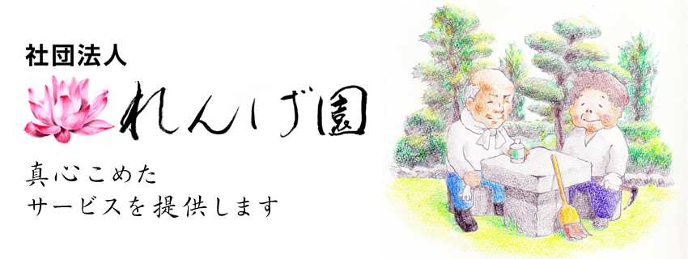

一般社団法人れんげ園定款
第１章 総則
-
（名称）
第１条 当法人は、一般社団法人れんげ園と称する。 -
（主たる事務所）
第２条 当法人は、主たる事務所を埼玉県坂戸市伊豆の山町 21-56に置く。 -
（目的）
第３条 当法人は、非営利目的とし次の事業を行う。 -
- 1 介護保険法に基づく福祉用具貸与
- 2 介護保険法に基づく介護予防福祉用具貸与
- 3 訪問美容
- 4 造園管理
-
(広告)
第４条 当法人の広告は当法人の主たる事務所の公衆の見やすい場所に掲示する方法による。
第２章 社員
- 第５条 当法人の目的に賛同し、入社した者を社員とする。
- (2)社員となるには当法人所定の様式による申し込みをし、代表理事の承認をえるものとする。
-
（経費等の負担）
第６条 社員は、当法人の目的を達成するため、それに必要な経費を支払う義務を負う。 - ２ 社員は、社員総会において別に定める入金及び会費を納入しなければならない。
-
（社員の資格喪失）
第７条 社員は次の各号の一に該当する場合には、その資格を喪失する。 -
- 1 退社した時
- 2 成年被後継人又は被保佐人になった時
- 3 死亡し、もしくは失踪宣言を受け、又は解散した時
- 4 2年以上会費を滞納した時
- 5 除名された時
- 6 総社員の同意があった時
-
（退社）
第８条 社員はいつでも退社することができる
第３章 社員総会
-
(社員総会)
第９条 当法人の社員総会は、定時総会及び臨時総会とし、定時総会は、毎年８月にこれを開催し、臨時総会は必要に応じて開催する。 -
（員数）
第１０条 当法人に理事２名を置く。
第５章 計算
-
（事業年度）
第１０条 当法人の事業年度は、毎年８月１日から（翌年）７月３１日までの年１期とする
第６章 附則
-
（最初の事業年度）
第１１条 当法人の最初の事業年度は、当法人成立の日から平成２７年７月３１日までとする。 -
（設立時の社員の氏名又は名称及び住所）
第１２条 当法人の設立時の社員せいの氏名又は名称及び住所は次の通りである -
埼玉県東松山市大字柏崎 365-2 五十嵐 尚美
埼玉県比企郡鳩山町楓ヶ丘 2-13-1 小澤 小夜子
お問い合わせ
- フリーダイヤル
- 0800-123-4747
- 電話番号
- 049-215-1414
- ファックス
- 049-215-1414
- メール
- rengeen-7447@gmail.com
アクセス
- 住所
- 埼玉県坂戸市伊豆の山町21-56
- 地図を見る
※遺品整理、片付けから相似まで全てお任せください。真心こめて対応致します。